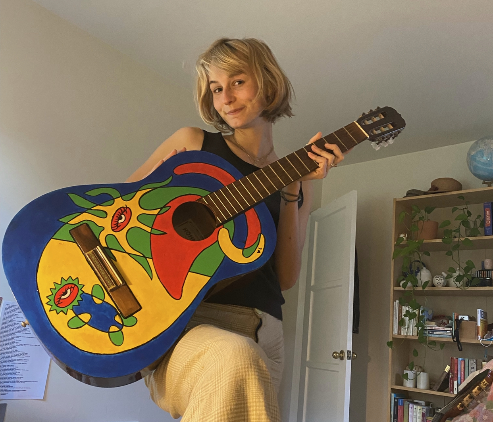

Luna Hohner-Shields
Society & Environment and Interdisciplinary Studies / 3rd year
hey hello! Some fun stuff about me- I like to climb, backpack, and swim. I also love painting, pottery, card games, and listening to music. Some slightly less fun stuff- I'm really passionate about climate and environmental justice issues, especially at the intersections of agriculture and food systems. Professionally, I want to work in sustainability consulting, as I like the problem solving and collaborative nature of this type of work. I have never coded before and been a bit overwhelmed with where to start, so here I am!!
Poptropica

Reading Response
- Throughout my own interactions with online content, I am only aware of the design choices when they aren’t working well or aren’t intuitive. I did not know how thoughtful and intentional wording was on these apps, such as “Add another tweet” or the suggested locations in AirBnB’s search bar.
- My favorite part of the article were the gifs that introduced different design elements one at a time. It broke down the structure and elements very thoughtfully.
- “Who are the people using this product? How might their use cases be different from yours?”
- 7 - it was interesting but quite short and surface level